August 13, 2016
| Eric and I were blessed to spend a day helping
out with the Potter's Field Kids ministry in Browning, MT. This is
an outreach on the Blackfeet Reservation that provides love and teaching
to about 35 kids every Saturday. One of our Kootenai Christian
church members, JJ Stark, is currently going through the Ignite training
program with Potter's Field ministry and has served in Browning for his
mission training. It was great seeing JJ and meeting those sweet
kids, as well as the dedicated folks who serve them. They are a
light!
For more information about these things, here are some links: Potter's
Field and JJ
Stark |
|
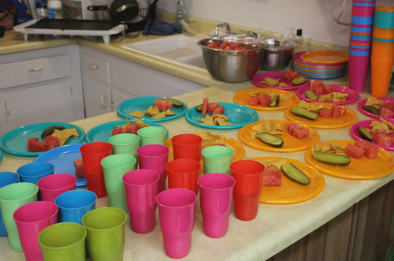 |
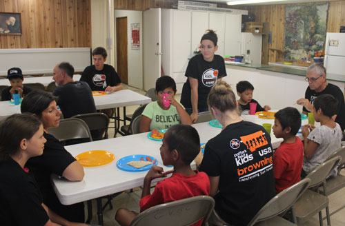 |
| I loved the colorful lunch setup, and boy, was it ever important to the kids which color they had. | Lunch with the kids |
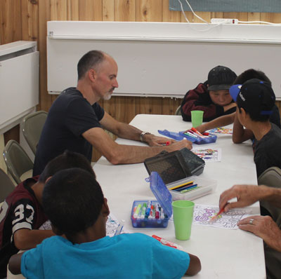 |
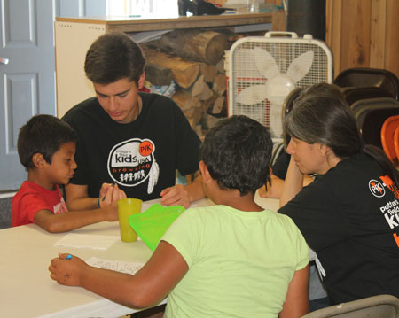 |
| Activity time! Here Eric takes turns coloring with some of the boys. | JJ & Tiffany being entertained by the jokester of the bunch |
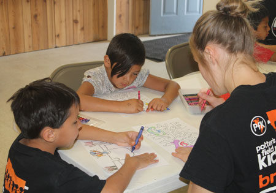 |
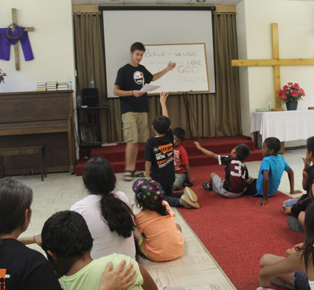 |
| Next we learned a Bible memory verse for the week. | |
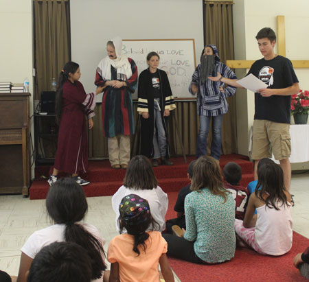 |
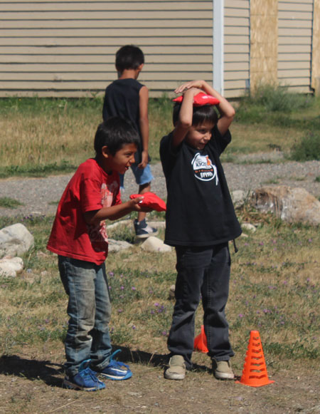 |
| After that was a great skit, acting out the story of The Good Samaritan | Next is games time. These guys were ready for action. |
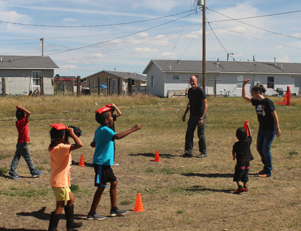 Eric helping out at game time |
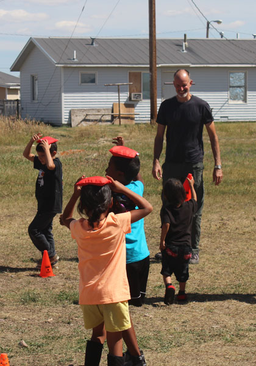 |
| He was mostly trying to undo the assistance provided by our tiny little cone mover. | |
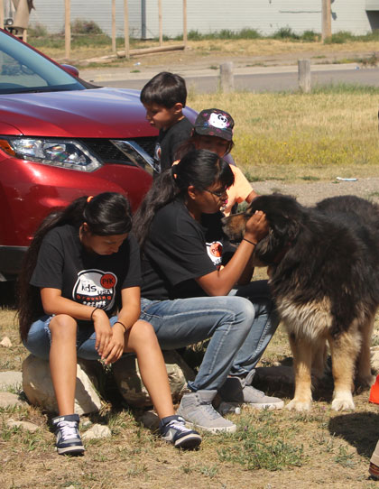 |
|
| This dog looks huge, scary, and scruffy, but he was such a sweetheart. He had very intelligent eyes and a soft heart. He gave us a nice sendoff after our day with the kids. |
|